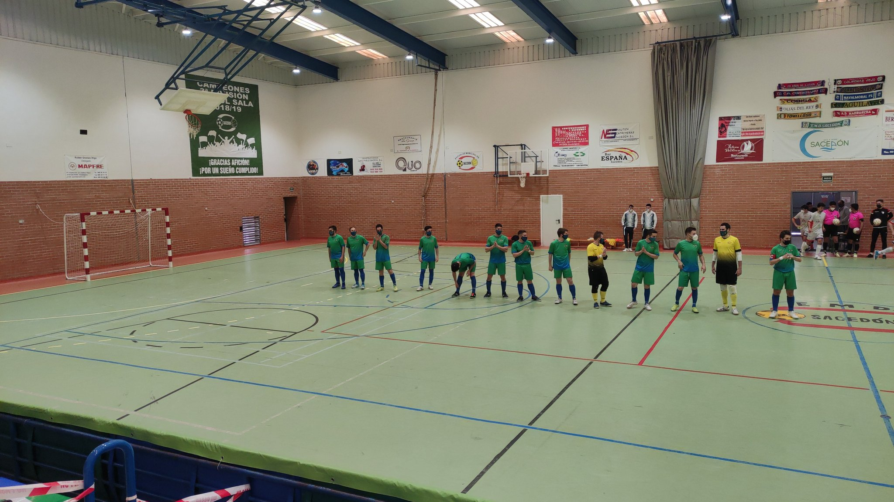
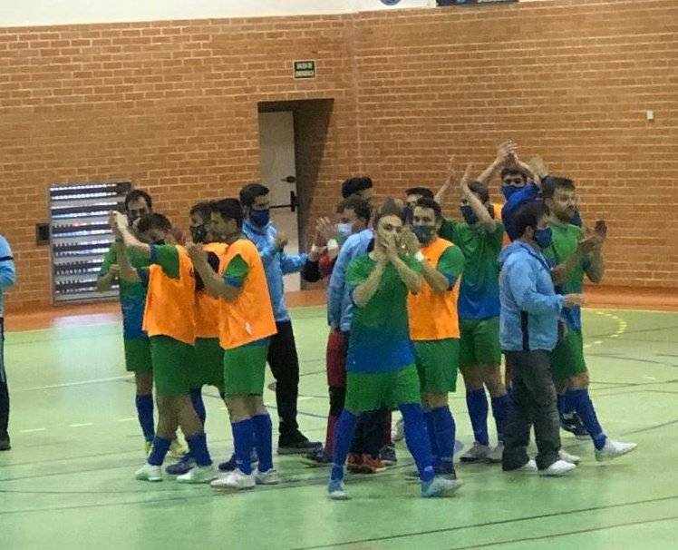
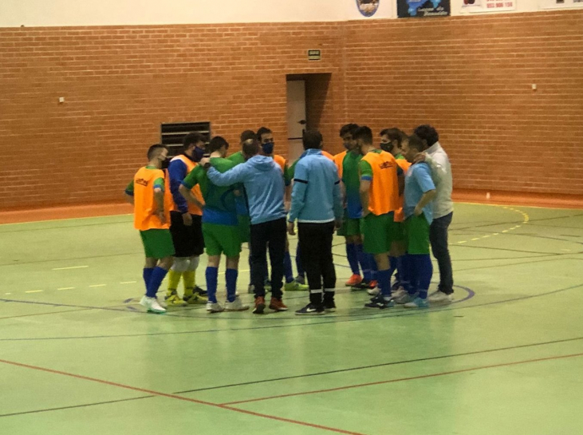
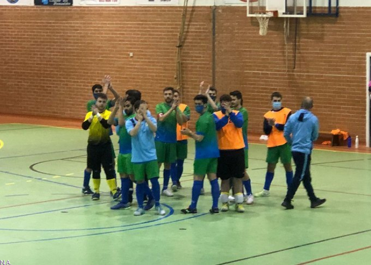
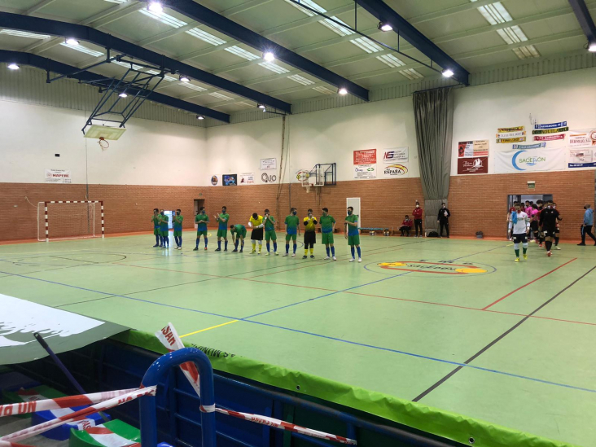
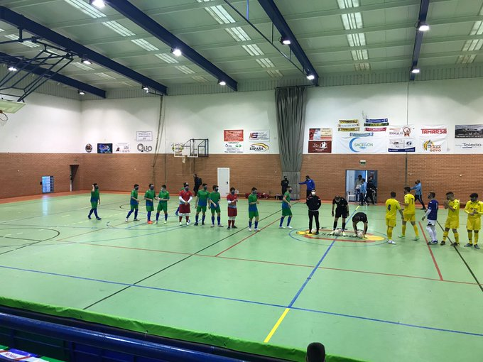
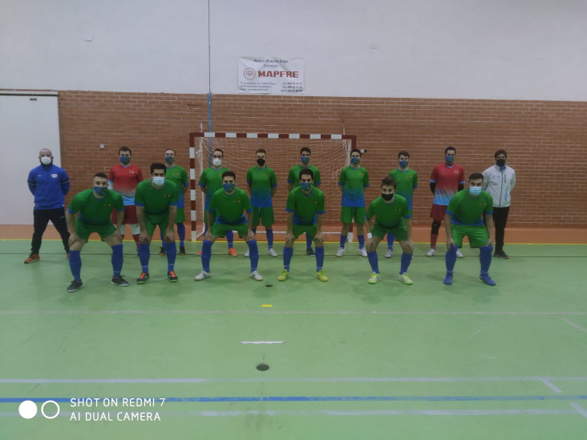
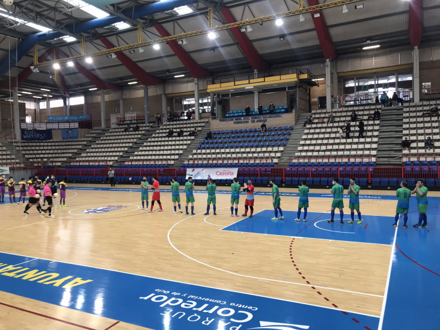
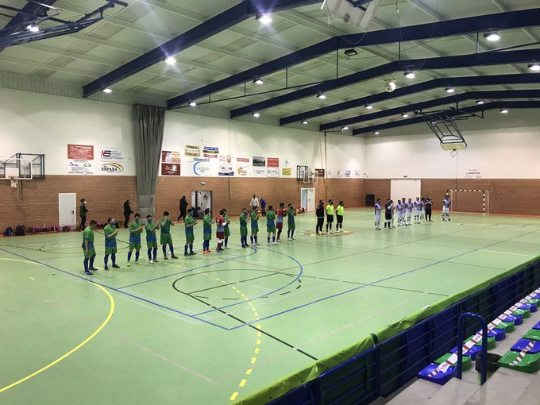

Los ribereños se vieron superados desde el principio, mentalmente nunca estuvieron en el partido.
Mal comenzaba el partido, un gol en contra y a remar. Pero esta vez no se vió el equipo duro, que no se rinde de otros días, mentalmente no parecían metidos en el partido y menos con el primer mazazo en contra. Poco después el segundo y a pesar de que Raúl consiguió acortar distancias y hubo dos o tres minutos que de nuevo aparecía el Sacedón de otros días, peleón y sin dar un balón por perdido, el tercer tanto acabo muy pronto con el partido. El 2-5 al descanso fue fiel reflejo de lo sucedido en pista, un equipo rival que las oportunidades que les daban las aprovechaban, con el control del partido y un Sacedón sin ese caracter característico de todos estos años al que todo le salía mal, cada oportunidad de meterse en el partido venía acompañado de un fallo defensivo que facilitaba el trabajo al rival.
La segunda parte fue un pasar el tiempo ampliando poco a poco la ventaja el equipo visitante. Sacedón gran parte del tiempo con portero jugador dispuso de alguna ocasión que no supo aprovechar y Tres Cantos se hizo con una cómoda victoria ante un rival que pareció muy tocado mentalmente. A los ribereños les quedan siete partidos, que son siete finales, no se pueden permitir el lujo de fallar practicamente en ninguna de ellas.

El Sacedón se complica la permanencia
18/04/2021
Dura derrota del conjunto ribereño en los últimos minutos tras remontar tres goles (7-5).
Partido muy importante el que se celebraba en Ibi. Ambos equipos necesitaban la victoria para seguir con opciones claras de salvar la categoría y se la llevaron los locales por 7-5.
Comenzaba mejor el Ibi y se ponían por delante, pero con dos goles de Javi Sanchez y Javi del Rio el Sacedón daba la vuelta al marcado llegando por delante a los minutos finales de la primera mitad, pero dos errores defensivos hacian que los de Sacedón se fueran por detrás en el marcador al descanso.
El Sacedón no salió bien tras el entretiempo y dos goles en un minuto ponían tres tantos de ventaja para los alicantinos. Parecía misión imposible remontar, pero el Sacedón no se dió por vencido y con goles de Bonacho y dos de Rubén Marcos ponía la igualdad en el marcador a falta de seis minutos.
Sin embargo fue el Ibi el que se puso por delante y mantuvo su ventaja hasta el final, aumentandola incluso n el último minuto hasta el 7-5 final.
El resultado deja en una situación complicada a un Sacedón que necesita ganar el próximo fin de semana en casa al Tres Cantos para seguir teniendo opciones de pelear por salvar la categoría.
VICTORIA DEL SACEDÓN QUE LES MANTIENE VIVOS
10/04/2021
Remontó ante Mejorada un partido vital para seguir con opciones de salvación
Se presentaba un partido vital para ambos equipos. Mejorada descolgado en la clasificación y Sacedón intentando salvar la categoría. No comenzó bien el partido para los locales, Mejorada se adelantó en el marcador, Sacedón quería pero no conseguía la igualada. Subió líneas pero no conseguía crear peligro. Mediada la primera parte Israel, el mejor del equipo local, conseguía el empate con un disparo exterior. Parecía que los locales tenían controlado el partido pero siempre fallaba el último pase. Trás un corner a favor donde se pidió penalti, los visitantes aprovecharon la buena salida de presión y de nuevo se pusieron por delante, marcador de 1-2 que se mantuvo hasta el descanso.
La reanudación fue muy entrentenida. Sacedón mejor plantado empató el partido con otro disparo exterior, esta vez de Rubén Marcos. Poco duró la alegría, Mejorada conseguía ponerse de nuevo por delante en la siguiente jugada. Otra vez sin tiempo a reaccionar Dani Calatrava ponía el empate y dejaba el partido en el aire. Sacedón apretaba y Mejorada buscaba las contras. A falta de cuatro minutos una buena jugada de Javi del Rio fue culminada por Israel que consiguió el tanto de la victoria.
Victoria importantísima para los ribereños que se mantienen vivos en la lucha por evitar el descenso. Próximo partido en Ibi, Alicante, ante otro rival directo en la clasificación.

El Sacedón no pudo contra el líder
04/04/2021
Los ribereños se mantuvieron dentro del partido hasta el 3-2 pero acabaron cediendo (10-2).
Abultada derrota en la primera salida del Sacedón en la fase por la permanencia. Los ribereños visitaban al actual líder del grupo en un encuentro que prometía ser complicado, tal y como terminó siendo.
En los primeros 10 minutos no hubo ocasiones, pero dos goles en un minuto de los locales hicieron que el Sacedón fuera a remolque todo el encuentro. un gol de Viñas antes del descanso dejaba el marcador en un 3-1 que daba esperanzas a los ribereños.
La segunda mitad comenzó con claro dominio sacedonense y un buen gol de Bonacho ponía el 3-2 en el marcador, pero en el mejor momento del Sacedón, llegaron dos errores defensivos que costaron dos goles que cambiaron el signo del partido y el Sacedón completó diez últimos minutos para olvidar.
El resultado obliga al Sacedón a ganar al Mejorada en el choque de la próxima semana. De no ser así, las opciones de mantener la categoría empezarían a escasear.

Empate con sabor a derrota para el Sacedón
29/03/2021
El conjunto ribereño se dejó remontar un 4-1 en los últimos minutos del partido (4-4).
Comienzo agridulce de la fase de competición en busca de la permanencia en Segunda B del Sacedón. El equipo ribereño desperdició un 4-1 en el marcador y acabó cediendo un empate.
El Sacedón empezó mejor el partido y logró ponerse por delante gracias a un doblete de Rubén Marcos. El Ye Faki, equipo alicantino, no tuvo opción a lo largo de una mitad que finalizó con el 2-0 a favor del Sacedón.
La segunda parte no pudo comenzar mejor para un Sacedón que hizo el tercer gol obra de Bonacho, y que seguía siendo superior al rival. Sin embargo, un error incomprensible de los locales dio vida al conjunto alicantino, una vida que no duró mucho por David marcó el cuarto y, parecía definitivo gol del partido. De hecho, los minutos posterior al 4-1 no tuvieron demasiada historia y el choque parecía sentenciado y decidido.
Faltaban menos de ocho minutos cuando los visitantes, gracias a un desajuste defensivo del Sacedón, volvían a meterse en el partido al anotar el 4-2. El tercer gol llegó a falta de cinco minutos, metiendo el miedo en el cuerpo a los ribereños, y solo un minuto después, el Ye Faki empató el partido.
Los locales intentaron buscar al triunfo con portero jugador en el último minuto, pero el empate no se movió del marcador.
El Sacedón inicia su camino para salvar la categoría
26/03/2021
El EMD Sacedón lucha desde este sábado por salvar la categoría.
El cuadro de Pablo Rives forma parte del grupo 4D que evitará el descenso. Son 12 equipos, de los cuales, los siete últimos al final de la fase, caerán a Tercera división. El sistema de competición será de liguilla doble vuelta, jugando, eso sí, contra los equipos con los que no se ha enfrentado en la primera fase.
Así, se verán las caras con Ibi (rival que este sábado visitará Sacedón a las 18.30 horas), Tres Cantos, El Álamo, Mejorada, Contestano Ye Faky y Silver. La competición concluirá en el mes de junio.

Un gol de David a diez segundos del final mantiene con vida al Sacedón
14/03/2021
Los ribereños comenzaron perdiendo muy pronto pero hicieron méritos para llevarse la victoria (1-1).
Partido muy importante el que disputaba este fin de semana el Sacedón. Los ribereños recibían al Madroñera, penúltimo, en un duelo importante por la permanencia.
Mal comenzaba el partido para el Sacedón cuando al poco del inicio el Madroñera se puso por delante al transformar un penalti. Apenas hubo ocasiones en la primera parte, aunque en los minutos finales los locales se lanzaron en busca del empate.
En la segunda mitad el panorama cambió. Una ocasión de David a los dos minutos hizo que la parroquia ribereña se animara y que el conjunto local, arropado por el público que por fin volvía a la bombonera ribereña, pusiera en jaque a los cacereños. Sin embargo, el gol no llegaba.
En el último cuarto de partido el portero visitante tuvo mucho trabajo, pero parecía que no llegaría el empate. A falta de 3 minutos el Sacedón puso portero jugador en pista y creó al menos cinco ocasiones claras de gol, y fue en la última cuando David logró un gol que ponía algo de justicia y que mantiene con vida al Sacedón el la lucha por la permanencia, aunque los ribereños merecieron más.
El Sacedón finalizará la primera fase del campeonato visitando al Colmenar.

Una victoria y una derrota en un fin de semana intenso para el Sacedón
07/03/2021
Tras vencer al Madroñera, rival directo, el conjunto ribereño ve la luz y ve más cerca la permanencia.
Compromiso complicado el que tenía que afrontar esta jornada el Sacedón con la visita al Bargas, segundo clasificado. El derbi regional fue igualado, pero los locales se acabaron llevando el gato al agua.
El Bargas empezó fuerte y logró ponerse 2-0 en los primeros minutos de partido. Fue entonces cuando los ribereños reaccionaron y convirtieron al portero local en el mejor del partido. Justo antes del descanso el Bargas no perdonó, y puso el 3-0. Tras el descanso, Carlos Jiménez recortó distancias, pero pese a usar el portero jugador, el 3-1 no se movió.
Victoria en el aplazado
También este fin de semana el Sacedón se enfrentó al Madroñera en el partido aplazado a causa de Filomena. Partido de infarto entre dos equipos que buscan salir de la zona baja que se terminó llevando el Sacedón por un marcador de 4-5 y que deja al equipo cerca de salir de la zona baja de la tabla.

El Sacedón sorprende al líder y logra volver a ganar
28/02/2021
Rubén Maceda lideró un gran partido colectivo del conjunto ribereño (4-3).
El Alcorcón, líder del grupo, visitaba la pista del Sacedón en un encuentro que no parecía el más indicado para que los locales revertieran su dinámica y lograsen sumar una nueva victoria, pero los ribereños ofrecieron una gran versión y sorprendieron al conjunto madrileño. Los locales se adelantaron en el marcador con un gol de Rubén al poco de comenzar. La defensa y los contragolpes eran las armas del Sacedón. En una de esas, Rubén contactó con Isra y lograron el segundo tanto, y un minuto después de nuevo el capitán daba otra asistencia a Javi para poner tres goles de distancia ante un Alcorcón sorprendido. Los visitantes lograron reducir distancias antes del descanso.
El segundo periodo comenzó con dominio claro visitante aunque los locales seguían saliendo con peligro. A los cinco minutos Alcorcón anotaba el segundo y eso hacía temer lo peor a la parroquia local, pero la defensa y Alex en la portería mantuvieron en ventaja hasta que de nuevo Rubén Marcos apareció a falta de pocos minutos para el final para poner el 4-2. El Alcorcón marcó un tercer gol, pero finalmente, los tres puntos se quedaron en Sacedón.

El líder y su pegada derrotaron al Sacedón
21/02/2021
Los ribereños se pusieron 2-0 pero acabaron derrotados por 2-6.
El lider, Cáceres, visitaba la pista de un Sacedónque plantó cara durante buena parte del partido. Los extremeños comenzaron mejor que los locales pero un gol de Dani.C. al poco de comenzar cambió el signo del partido. El Sacedón comenzó a sentirse más cómodo, con una buena defensa que apenas dejaba opciones al Cáceres. En otra contra, Carlos conseguía el segundo gol y daba esperanzas a los ribereños de conseguir un buen resultado ante el líder.
En el último tercio de la primera parte, una ocasión muy clara desaprovechada por el Sacedón fue el preámbulo del primer gol de Cáceres, que fue un duro golpe anímico para los ribereños. Poco después en una acción polémica, los jugadores visitantes sacaron rápido una falta muy dudosa, los colegiados dejaron seguir, y llegó el segundo tanto. El resultado al descanso era de empate a dos.
El inicio del segundo periodo fue del Cáceres, tanto que a los cinco minutos ya había marcado dos goles más. El Sacedón intentó reaccionar pero acusaron el golpe, la racha negativa del equipo y la situación clasificatoria minan la moral de un conjunto que semana tras semana no ve reflejado el buen trabajo en resultados. El quinto gol sentenció el partido a poco más de cinco minutos y ya con portero jugador llegó el definitivo 2-6.
Un mal arranque condena al Sacedón
14/02/2021
Los ribereños no pudieron reponerse al 4-1 que reflejaba el marcador a los 5´ de partido (5-2).
El Sacedón visitaba esta jornada a uno de los mejores equipos del grupo. El equipo ribereño no entró bien al partido, dio muchas facilidades al rival, y a los 20 segundos llegó el primer gol local. El segundo llegó a los dos minutos, pero Raúl acortó distancias y Javi estuvo cerca de lograr el empate. Sin embargo los dos siguientes ataques del Navalmoral fueron gol, colocando el 4-1. Los locales hacían gala de su gran eficacia aprovechando las concesiones del Sacedón.
Desde ese momento hasta el final de la primera parte los de Sacedón igualaron el partido, compitiendo a un Navalmoral que pese a ello fue capaz de mantener la renta.
La segunda mitad comenzó con gol del Sacedón. Parecía que los ribereños se metían en el partido, pero esa sensación duró unos pocos minutos. El Navalmoral comenzó a dominar de nuevo el juego y fruto de eso llegó el quinto y definitivo tanto. El Sacedón dispuso de varias oportunidades, con cuatro postes en el partido, pero de nuevo estuvo desafortunado de cara a gol. Los últimos minutos con portero jugador tampoco dieron el resultado deseado y el Sacedón apenas creó peligro.
Sin tiempo para lamentaciones, el Sacedón recibe la próxima semana al líder del grupo con la intención de dar la campanada.
El Sacedón cae pese a ir por delante casi todo el partido
31/01/2021
Los ribereños fueron ganando hasta en cuatro ocasiones pero no supieron sacar nada positivo de su visita al Torrejeón (6-4).
El Sacedón visitaba al Torrejón en un partido clave en la zona baja del grupo. De ganar, el Sacedón habría dejado muy tocado al equipo madrileño, colista antes del inicio del partido.
El choque no pudo comenzar mejor para los visitantes, y es que dos goles obra de Rubén y Dani los ponían en ventaja en el marcador, algo que venían deseando tener durante la temporada. Pero no supieron mantener la renta hasta el final de la primera mitad, y el Torrejón igualó el partido rapidamente e incluso se pudo ir con ventaja a los vestuarios.
La segunda mitad también comenzó con dominio del Sacedón, que se ponía con ventaja con el primer gol de Bonacho en el equipo, pero por cada gol del Sacedón se sucedía otro de lTorrejón. Los locales no se vinieron abajo en ningún momento y tuvieron su premio final. Viñas de nuevo adelantaba a los ribereños, por cuarta vez en el partido el Sacedón se adelantaba en el marcador, pero la ventaja solo duró dos minutos. Se llegó a los últimos diez minutos con empate a 4, cualquiera se lo podía llevar. Una contra del Torrejón con un disparo desde un lateral acababa en gol y ponía por delante a los locales. A pesar de tque el Sacedón tuvo ocasiones para conseguir el empate, este no llegó, y con portero jugador y trás un robo en la circulación, los de Torrejón consiguieron el sexto y definitivo tanto.
Dura derrota de un Sacedónque debe reponerse ante rápido para competir ante un buen rival, el Cobisa, el próximo fin de semana en casa.

Un Sacedón fallón cayó derrotado por un gol en el último segundo
24/01/2021
El conjunto ribereño fue superior al Colmenar pero no estuvo acertado de cara a gol (2-3).
Solo 1.4 segundos faltaban para el final cuando el Colmenar consiguió la victoria tras un saque de banda desde el centro del campo que fue peinado a gol en la visita al Sacedón. Hasta ese momento, el partido tuvo un claro dominio del Sacedón que consiguió ventaja en el primer minuto de juego pero que no supo ampliar su el marcador a pesar de contar con al menos 4 ocasiones claras de gol.
Quien si supo aprovechar la suya fue el Colmena, que conseguía el empate mediada la primera parte y poco después, en una jugada de estrategia, lograba el segundo tanto. Los de Sacedón iban por debajo por la falta de puntería de cara a gol.
El final de la primera parte no tuvo una historia distinta. Dominio de Sacedón, destellos del Colmenar y ocasiones falladas por parte de los locales que no pudieron lograr el empate antes de llegar al descanso.
La segunda parte fue muy similar a la primera. Las ocasiones se sucedían por parte local pero unas veces el portero y otras veces la falta de acierto hacían que no se moviese el marcador. A falta de un minuto y con portero jugador, Israel marcó el ansiado y merecido empate para los ribereños.
Injusto final
Parecía que por fin tenían premio los de Sacedón, pero no fue así. En un último minuto en el que ninguno de los dos equipos dominó el juego, un saque de banda desde el centro del campo dio lugar al gol visitante que a la postre acabó decidiendo un partido que se le escapó al Sacedón por la falta de puntería. Ambos equipos jugaron un partido de poder a poder en una pista que contaba con zonas impracticables para este nivel provocado por la humedad del ambiente.
Por el Sacedón es destacable el debut de Mario Bonacho, pívot briocense que se incorpora al equipo con la función de ayudar en la definición, en busca de goles, la principal carencia del equipo.

Sacedón y Torrejón firman un empate que no contenta a nadie.
08/11/2020
Los locales remontaron un 0-3 en contra para sumar un punto (3-3).
Tercera jornada y de nuevo los de Sacedón en casa a puerta cerrada ante un rival considerado de los gallitos del grupo. Comenzó el partido muy igualado hasta el gol del Torrejón a los cinco minutos. Desde ese momento el conjunto local comenzó a dominar en todo momento con continuas llegadas cada vez más claras según se acercaba el final de la primera mitad, solo dejando lugar a las contras a los de Torrejón que apenas inquietaron la portería de Edu. Carlos, Andrés, Rubén, Javi en dos ocasiones, por cierto debut de este último a un buen nivel y dando alternativas en el juego muy válidas, tuvieron oportunidades claras de gol que no supieron materializar. Al descanso se llegó con 0-1 para Torrejón pero con mejores sensaciones locales.
La segunda mitad sin embargo tuvo un comienzo con algo más de dominio visitante y gracias a ello y un error en cadena de los ribereños, los madrileños consiguieron el segundo tanto y poner tierra de por medio. A este tanto le seguirían unos minutos sin dominador claro con juego muy descontrolado por ambas partes y sin casi llegadas con peligro. En una falta lateral lanzada directamente consiguió Torrejón el 0-3 que parecía sentenciar el partido y más viendo los siguientes minutos que no supieron aprovechar los de Torrejón que dispusieron de ocasiones claras pero no supieron aprovechar los peores minutos de los locales con muchas imprecisiones.
Cuando peor estaban las cosas un tiro exterior de Rubén acortaba distancias en el marcador y así el capitán se resarcía de su error en el segundo gol. Los de Sacedón se volvían a meter en el partido. Desde ese momento hasta el final el dueño del encuentro fue Sacedón, sin la fluidez y orden de la primera parte pero si con más empuje y garra. En una de esas defensas adelantadas Bernet aprovechó un error visitante y puso el 2-3 a falta de cinco minutos. Las ocasiones se sucedían pero el gol no llegaba. Faltando poco más de dos minutos los locales pusieron en pista portero-jugador y dió resultado. Viñas después de varios rechaces colocaba el merecido empate en el luminoso.
Quedaba un minuto y aún pudo pasar de todo, ambos equipos gozaron de su ocasión pero ninguno supo materializarla. Empate a 3 final que no dejó a ninguno contento. Los de Torrejón desaprovecharon tres goles de ventaja y los de Sacedón a pesar de remontar les supo a poco el punto después de ser mejores durante gran parte del partido.
La EMD SACEDÓN recoge el premio Nueva Alcarria a las Mejores Escuelas Deportivas 2019
10/12/2020
En un acto íntimo, con todas las medidas de seguridad, la concejal de Deportes Alicia Guitart acompañó al director de las Escuelas Deportivas Ismael Sanz y a una representación de alumnos a la recogida del premio en el Teatro Buero Vallejo. El galardón, concedido en el primer trimestre de 2020, iba a haberse entregado en marzo del año pasado, pero el confinamiento obligó a retrasar la ceremonia.
El veterano periódico alcarreño premia así la trayectoria y el trabajo de unas escuelas deportivas que son motivo de orgullo para Sacedón, con más de 150 alumnos, casi un diez por ciento de la población y más del setenta por ciento de los niños y niñas de la localidad inscritos en ellas. Una apuesta por el Deporte y por la Juventud que la concejal ratifica "con la mayor satisfacción y orgullo". Para Guitart, "son fruto del trabajo bien hecho y del esfuerzo de sus responsables y entrenadores, con Isma a la cabeza".
El alcalde, Francisco Pérez Torrecilla, que no pudo acudir al acto, quiso agradecer también "al periódico Nueva Alcarria el reconocimiento y a los niños y niñas que cada año nutren nuestras escuelas, empujando con su ilusión el motor del deporte sacedonero". Pérez Torrecilla valoró también "el importante papel del deporte de base en la indetidad como pueblo y en la consiguiente lucha contra la despoblación; porque además de ofrecer una alternativa de ocio, generan un sentimiento que enraiza a los jóvenes con su municipio".
Primer fichaje del F.S. Sacedón para la temporada 20-21
22/07/2020
Andrés.D. Fernández Ramiro"Andrés" reforzará a los ribereños dando mayor profundidad a la plantilla.
Andrés.D. Fernández Ramiro,"Andrés", es el primer fichaje del equipo ribereño. Procedente de Azuqueca, pasó por C.Guadalajara, Rivas Juvenil y Puertollano. Jugador habilidoso en los metros finales que viene a dar mayor profundidad al equipo. El equipo de Sacedón buscaba un jugador que pudiera desequilibrar en los metros finales y esperan encontrar eso en Andrés.
El nuevo jugador ya tiene experiencia en categorías nacionales y llega con muchas ganas de ayudar al equipo a conseguir el objetivo de la permanencia.
Casi cerrado el equipo los ribereños están a la espera de completar una última ficha para dar por finalizada la planificación de la próxima temporada.